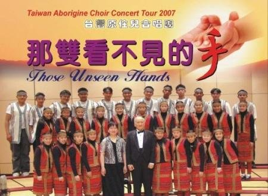
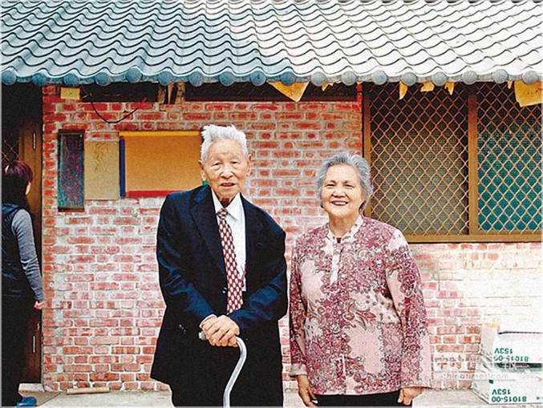
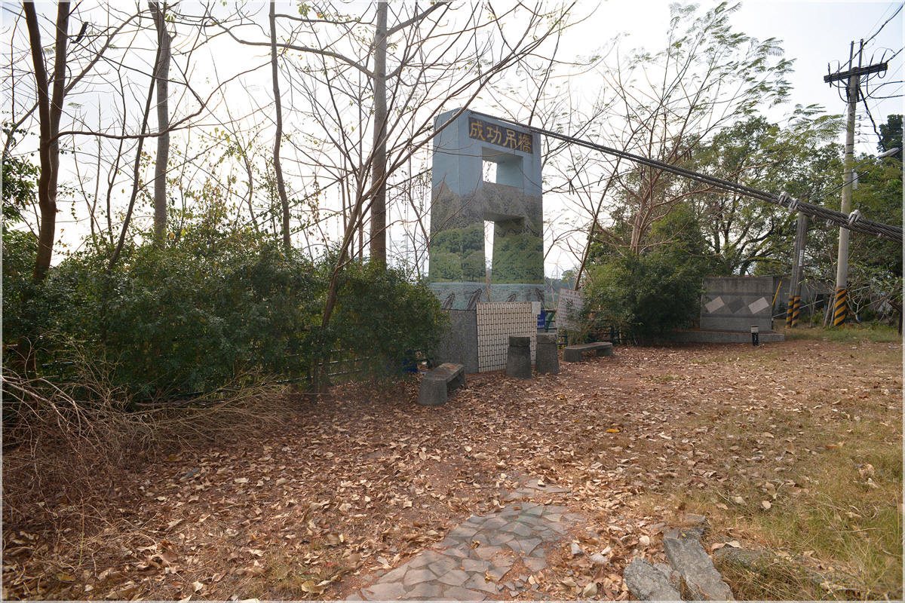

雖不見你，觸不到你，
但是我知，你正在對我低語。
喔主耶穌！喔主耶穌！
我深知道你一直就在這裡。
是你的手，釘痕的手，
重新撫慰，我那破碎的心田。
是你聲音，溫柔話語，
再度填滿我心靈中的飢渴。

|
雖不見你，觸不到你， |
|
|
|
|
http://www.hymncompanions.org/Jul/21/stream.php
那雙看不見的手
The Invisible Hands
雖不見祢，觸不到祢，
但是我知，祢正在對我低語。
哦！主耶穌，哦！主耶穌，
我深知道祢一直就在這�堙C
是祢的手，釘痕的手，
重新撫慰我那破碎的心田。
是祢聲音，溫柔話語，
再度填滿我心靈中的飢渴。
 (請點耳機收聽)
(請點耳機收聽)
許多時候我們信心不足，一再要求神給我們憑據，使我們可以清楚祂的旨意。
但是我們祇要信賴神的話語，確信那雙看不見的手一直扶持著，就該沒有疑懼了。 這首詩歌的作者，無法考證，祇知它是台灣原住民的詩歌，由余錦福譯成國語。
詞句和旋律雖很簡單，卻是那麼地撼人心弦。
自1998年夏，寇順舉牧師（David S.J.Kou，1929 -
）率領台灣六龜山地育幼院少年兒童合唱團來美巡迴演唱後，這首歌就不脛而走，傳遍了華人教會與團契，成為許多人的至愛。
試想我們一生中不知有多少時，被那雙看不見的手撫慰，扶持！
六龜山地育幼院，座落在台灣高雄縣六龜鄉偏僻山區。
四十多年前，楊煦牧師和師母本乎基督的愛，幼吾幼以及人之幼，從收養一個山胞的啞女開始，在這深山中為原住民的孤兒創立了這個家。
這些年來楊牧師全家，胼手抵足，開荒耕種，飼養牲畜，篳路藍縷，自給自足，已有六百多位孤兒和棄嬰在此渡過他們的童年。故總統蔣經國曾六度親臨探視孤兒，引起了社會的關懷與資助。
山中紛紛傳出了許多傳奇。 諸如無手的楊恩典成了一位卓越的腳畫家，她將畫展義賣所得，回饋給撫養她茁長的六龜山地育幼院。 院童中也有成為體育選手，也有在電視上歌唱比賽奪魁，大專聯考的狀元。
組成這合唱團則是在神安排下的另一件美事。
寇牧師和楊牧師在神學院時是同班同學。 寇牧師酷愛音樂，除會奏小提琴外，諳聲樂及樂理，曾向譽滿國際的伍伯就教授學習義大利美聲發音法。
寇牧師牧會之餘，訓練中學合唱團，曾連續兩年獲合唱比賽冠軍。
1998年春，寇牧師由南非返美途經台灣，順道探訪楊牧師。 原住民兒童的純真天性及他們嘹亮的歌喉，深深地感動了他。
在楊牧師懇請下，他挑選具有潛力的兒童，以美聲發音法，予以密集訓練三個月，個個練成「不怕唱」的金嗓子，可以一口氣演唱一個半小時，他們將乖舛的命運，化為動人的歌聲。
1998年及1999年夏，六龜山地育幼院少年兒童合唱團兩度來美國西岸巡迴演唱，首次共演唱十五場，第二次共有三十八場。
除了獻唱聖詩、為主作見證外，也有藝術歌曲及布農族民謠。 其中許多詞曲，都是寇牧師編作。
他們也曾應邀在2001年赴中國大陸、香港、印尼、西德及挪威等地巡迴演唱。2006
年他們在溫哥華演唱，當唱到「那雙看不見的手」時，團員們感懷身世，口唱心和，熱淚涔涔而下，在場者無不為此動容（可在 YouTube 上觀賞）。
https://wellsofgrace.com/biography/test/6gui-choir.htm

这是一个很特殊的案例，林小虎（化名），七岁送进育幼院来的时候，令管理人员头痛万分。他非常神经质，性情乖张，具有很强的攻击性，敌视所有的人，特别是
管理阶层。反抗心特强，不服管教。故意破坏公物，违反院规，辅导老师软硬兼施，用尽方法，毫不奏效。有如一只受伤自卫的小老虎，张牙舞爪，随时预备作最后一搏。
大约半年以后，戏剧性的改变发生了。
一天林约翰先生，在客厅播放合唱团的DVD，招待来宾欣赏，营造出极为感人的艺术气氛。一场演出实况录影带播完，客人都被感动得泪流满面。约翰不经意回头，发现林小虎不知什么时候溜进来，站在后面房角观赏音乐，被诗歌感动得热泪滚。原来他早就站在那儿了，一向极为顽皮好动，一刻也不肯安静下来的他，在音乐的魅力之下，竟使他安静得一动不动，专注
的顷听演唱，直到完毕，他整个人仿佛被定在那里，半天不动。仍然沉浸在音乐的感动里。尤其末了那首《那双看不见的手》，以雷霆万钧之势，震撼着他的灵魂。
是这些歌声敲开了小虎封闭已久的心扉，神的爱使他的心软化了。约翰注意的观察这个顽劣不堪的孩子，到底有些什么转变。
就从那天起，小虎整个人仿佛完全焕然一新。他不再敌视周遭的人，也不再拒绝和别人“交往”了。和管理人员也能和睦共处了，显然是耶稣的爱点化了他。
我要更深的了解他，为什么会成为人人头痛的反社会顽童，是否和他的原生家庭有关？
果然，他是个家庭暴力之下的受害者。经常被父母打骂。尤其是母亲，见到他就生气，打他、骂他、用摩托车滚烫的排气管烫他，烙得他浑身伤痕累累。可怜他幼小
的年纪，完全没有自卫的能力。一次母亲强迫他一直喝水，喝到血液被稀释而昏倒（会致命）。幸亏邻居报警，社会工作者救了他的命。以后由政府保护。送到志愿
收养家庭寄养。但这个孩子身心受伤太深，连父母都恨自己要置之死地，其他人岂不更可怕了。所以很自然的培养出过度自卫的性格。与寄养家庭处处作对。换了好
几个家庭，卒不能和谐共处，被退回政府。最后送到了六龟基督教山地育幼院来，因为人皆周知，六龟山地育幼院的创办人杨煦牧师夫妻，是极有爱心的人，从来就
不拒绝任何被放弃的人。
听到这里，便极想认识这个孩子。他被自己父母痛恨到欲置之死地的地步，想必这孩子长得十分丑陋，或有肢体的残疾。认识之后，大为不解，原来这孩子像貌清秀，五官端正，皮肤白晰，是个长像极其可爱的面孔。这就更加不解了，这么可爱的长相，真够得上人见人爱，父母百般疼爱都来不及，怎么还会讨厌他呢？一定还有什么内情。
“听说他父母感情不睦。”
感情不睦，也不应该迁怒到孩子身上呀。
“听说这孩子是母亲和别人生的。”

